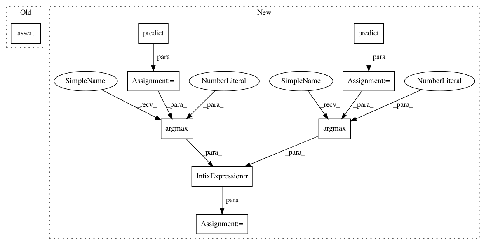

bd298684614646d8f0db5a6597ef88b8d662e25e,tests/defences/test_distillation.py,TestDistillationVectors,test_keras_iris,#TestDistillationVectors#,267
Before Change
modified_classifier=modified_classifier
)
self.assertIn("The input trained classifier do not produce probability outputs.", str(context.exception))
def test_pytorch_iris(self):
Third test for Pytorch.
After Change
)
// Compare the 2 outputs
preds1 = trained_classifier.predict(
x=self.x_train_iris,
batch_size=BATCH_SIZE
)
preds2 = modified_classifier.predict(
x=self.x_train_iris,
batch_size=BATCH_SIZE
)
preds1 = np.argmax(preds1, axis=1)
preds2 = np.argmax(preds2, axis=1)
acc = np.sum(preds1 == preds2) / len(preds1)
self.assertGreater(acc, 0.2)
ce = cross_entropy(preds1, preds2)
In pattern: SUPERPATTERN
Frequency: 3
Non-data size: 9
Instances
Project Name: IBM/adversarial-robustness-toolbox
Commit Name: bd298684614646d8f0db5a6597ef88b8d662e25e
Time: 2020-02-21
Author: M.N.Tran@ibm.com
File Name: tests/defences/test_distillation.py
Class Name: TestDistillationVectors
Method Name: test_keras_iris
Project Name: IBM/adversarial-robustness-toolbox
Commit Name: bd298684614646d8f0db5a6597ef88b8d662e25e
Time: 2020-02-21
Author: M.N.Tran@ibm.com
File Name: tests/defences/test_distillation.py
Class Name: TestDistillationVectors
Method Name: test_keras_iris
Project Name: IBM/adversarial-robustness-toolbox
Commit Name: 298682aa50827f430cac17d2db09c5dbcdbf3986
Time: 2017-07-31
Author: ambrishrawat@gmail.com
File Name: src/metrics.py
Class Name:
Method Name: empirical_robustness
Project Name: IBM/adversarial-robustness-toolbox
Commit Name: aa47cfed2d57c6551a9a0132ace9b10d0b62421d
Time: 2018-01-18
Author: Maria-Irina.Nicolae@ibm.com
File Name: src/metrics.py
Class Name:
Method Name: empirical_robustness